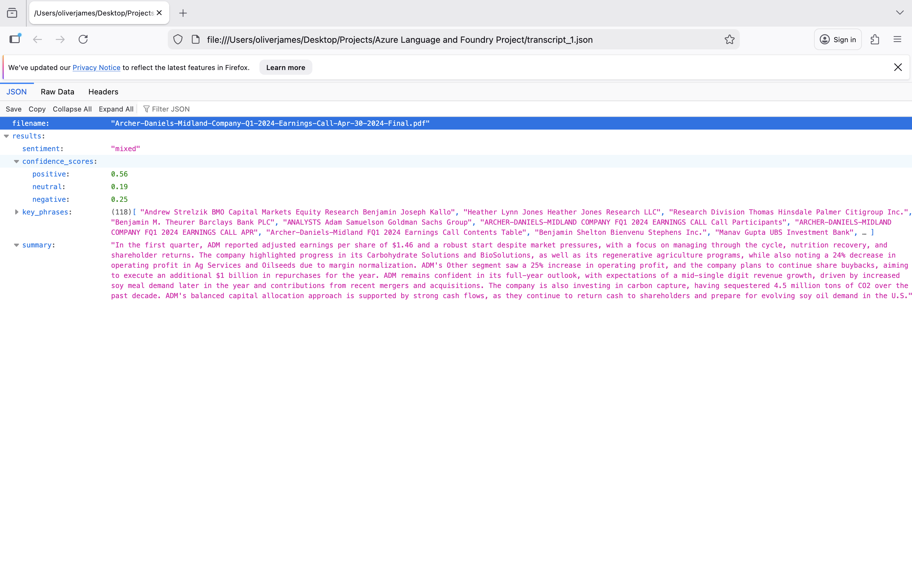

Multi-Service Azure Pipeline for Earnings Call Analysis
An automated pipeline that analyzes earnings call transcripts and extracts investment sentiment. It uses Azure Language Service for NLP and Azure AI Foundry for synthesis, producing executive summaries of investment risks and sentiment trends over time.
The pipeline runs in five stages:

Terminal demo:
Streamlit interface for uploading transcripts and viewing formatted reports:
This was my first time chaining multiple Azure services into one workflow. Azure Language Service handles the structured NLP tasks, Azure AI Foundry adds the analytical layer. Breaking complex analysis into discrete stages (text extraction, sentiment, key phrases, synthesis) made the pipeline easier to debug and maintain.
First time deploying to Streamlit too. It made it easy to turn a command-line tool into something non-technical users could actually use.